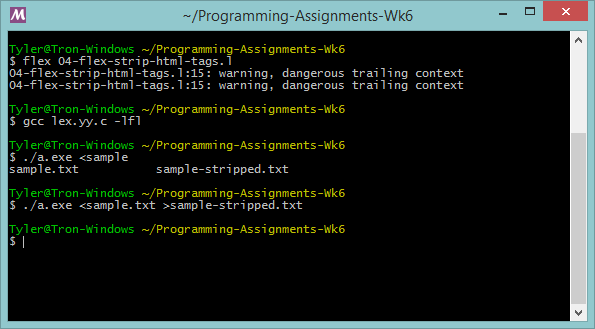

---
layout: default
title: 04-flex-strip-html-tags
---
{% highlight text %}
%x tag
LEADING_SPACES ^[\t ]+/.*
OUTPUT [^\<\n\r]+
NEWLINE [\n\r]+
int printNewlines = 0;
%%
\< BEGIN(tag);
\> BEGIN(0);
[^\>]+ /* Inside a tag, output nothing. */
/* Outside a tag, output most things.
Only output a newline if there's something else
to be printed on a line. */
<*>{LEADING_SPACES} {}
{OUTPUT} ECHO; printNewlines = 2;
{NEWLINE} if (printNewlines > 0) printf("\n"); --printNewlines;
{% endhighlight %}

Before
After